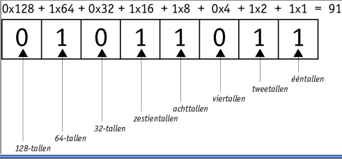

In alle computers die we gebruiken zit een programma dat twee standen kent, ook wel aan en uit. In Plaats van aan en uit, worden de cijfers 0 en 1 gebruikt. Het binair stelsel wordt daarom ook wel het tweetallig talstelsel genoemd. Met deze cijfers kan je bijvoorbeeld tekst schrijven of opdrachten aan je computer doorgeven.
Het binair stelsel bestaat uit machten van 2. Het eerste cijfer staat voor 1. het volgende cijfer 2, daarna, 4,8,16,32, etc. Je telt de code vanaf rechts naar links op. Als er een 0 staat, tel je het cijfer niet op. Als er een 1 staan, dan tel je het wel erbij op. Dit wordt er bedoeld met aan en uit. Helemaal onderaan de pagina heb je twee spellen waar je zelf kan oefenen met het binair stelsel.
Het ascii tabelDe ascii tabel is een tabel waar cijfer, letters, leestekens en stuurcodes mee worden voorgesteld. Het zijn allemaal cijfers, en deze cijfers worden omgezet tot het juiste karakter (dus de cijfers, letters, leestekens en stuurcodes). ASCII is de afkorting voor American Standard Code for Information Interchange. De basic code gaat van 0 tot en met 127. Elke code bestaat uit 8 bits, de bits zijn 0 of 1. Deze 8 bits samen noem je een byte. Een byte is dus een andere manier voor het opschrijven van symbolen zoals cijfers of letters. Je hebt ook nog een uitgebreide versie van de ascii tabel, namelijk van 128 tot en met 255. In deze tabel staan letters en symbolen die minder vaak gebruikt worden. In de basistabel begint elke code met 0. Daarom worden er bij deze tekens ook vaak 7 bits gebruikt in plaats van 8, omdat 0 niks toevoegt. Bij de uitgebreide versie begint de code wel met 1, deze codes hebben dus ook altijd 8 bits. KLik op de link rechts boven de tekst voor het hele tabel.